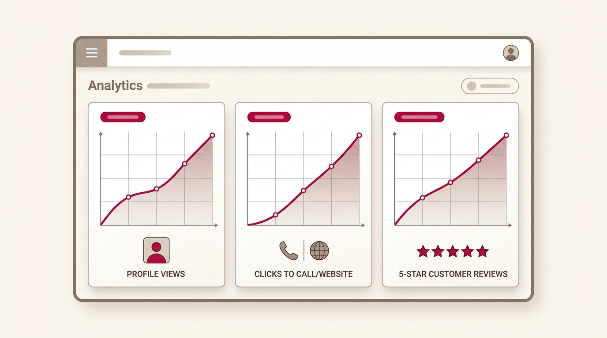
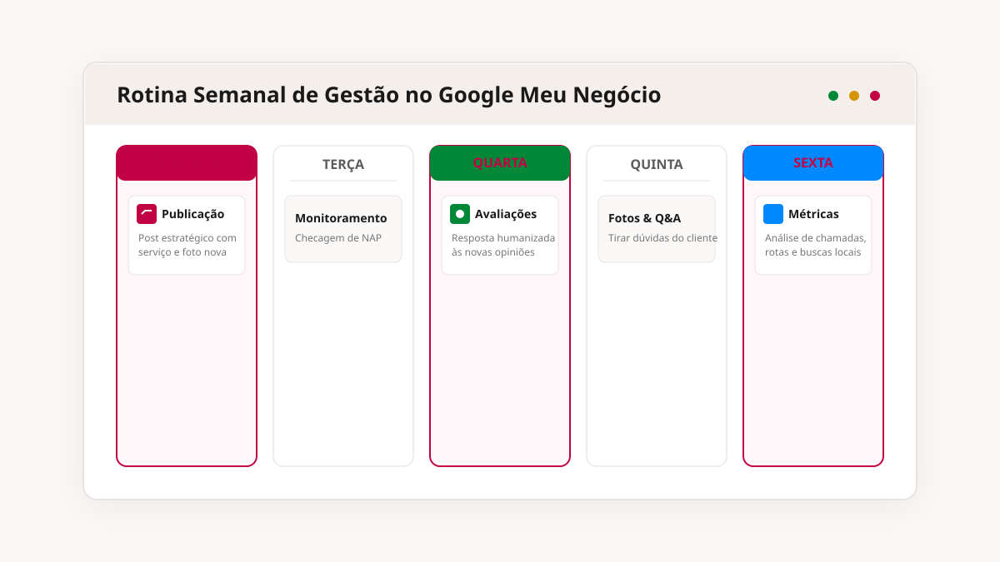

Gestão de Google Meu Negócio: por que otimizar uma vez não é suficiente
Otimizar o perfil no Google resolve a estrutura. Não resolve o fato de que o Google muda os critérios com frequência, os concorrentes continuam ajustando os perfis deles, e as avaliações — boas ou ruins — continuam chegando com ou sem alguém acompanhando.

O que muda quando ninguém está de olho no perfil
Perfil sem atividade tende a ficar parado nos resultados enquanto os concorrentes que publicam, respondem avaliação e mantêm a informação atualizada vão ganhando terreno aos poucos. Isso não acontece de uma vez, acontece devagar — e é exatamente por isso que costuma passar despercebido até alguém notar que o movimento caiu.
Isso significa que um perfil com avaliações não respondidas, ou com poucas avaliações recentes, está competindo em desvantagem contra qualquer concorrente que trate essa parte com atenção.
Fonte: BrightLocal, Local Consumer Review Survey 2026O trabalho contínuo por trás de um perfil que se mantém relevante
Gerir o perfil envolve publicar atualizações com frequência (o Google trata publicações como sinal de atividade), acompanhar e responder avaliações, revisar palavras-chave conforme o comportamento de busca muda, e ajustar informações do negócio sempre que algo muda — novo serviço, novo horário, nova forma de atendimento.
Nada disso é complicado isoladamente. O que exige rotina é fazer isso toda semana, sem deixar acumular.

O que costuma travar essa decisão
A otimização estrutura a base. A gestão é o que mantém essa base relevante conforme o tempo passa, novas avaliações chegam e os concorrentes se movem.
Consegue, se sobrar tempo toda semana pra isso. O problema comum não é falta de capacidade, é falta de rotina — o perfil fica esquecido no meio da correria do próprio negócio.
Responder — inclusive avaliação negativa, de forma profissional — costuma pesar mais a favor do negócio do que ignorá-la. Quem lê a avaliação também lê a resposta.
O que entra no serviço de Gestão de Google Meu Negócio
Trabalho realizado de forma recorrente:
Criação e publicação periódica de novidades, serviços e ofertas dentro do próprio perfil do Google.
Leitura e resposta às avaliações recebidas, mantendo o tom adequado mesmo em situações mais delicadas.
Revisão periódica dos termos de busca relevantes pro setor, ajustando a estratégia conforme o comportamento muda.
Acompanhamento de visualizações, cliques e ligações geradas pelo perfil, pra entender o que está funcionando.
Pra quem isso faz sentido agora
Você já tem um perfil estruturado no Google, mas não tem tempo, conhecimento ou disposição pra cuidar dele toda semana. Também vale se você já percebeu que o perfil ficou parado nos últimos meses, sem publicação nova nem resposta às avaliações.
Seu perfil ainda nem passou pela etapa de otimização inicial — nesse caso, faz mais sentido começar pelo serviço de Google Meu Negócio antes de contratar a gestão contínua.
Perguntas frequentes
Não. A gestão parte de um perfil já otimizado. Se o seu ainda não passou por essa etapa, ela acontece antes, como parte da estruturação inicial.
A frequência é definida junto com você conforme o tipo de negócio, mas o objetivo é manter atividade constante o suficiente pra o Google reconhecer o perfil como ativo.
A resposta é sempre alinhada com você antes de publicar, principalmente em casos mais sensíveis, pra manter o tom coerente com como sua empresa se comunica.
Sim, com acompanhamento periódico dos indicadores do perfil, pra entender a evolução ao longo dos meses.